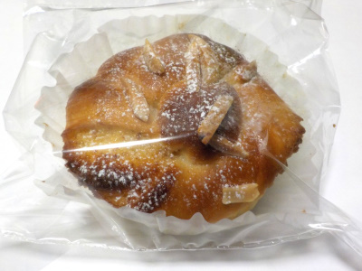
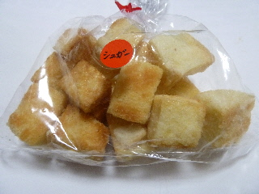
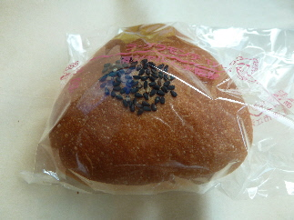
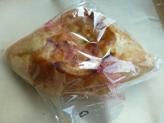
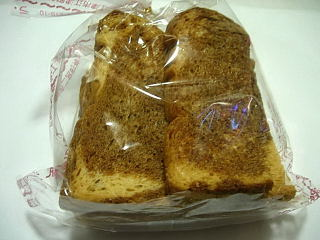
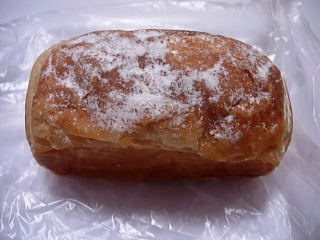

ラ・グラン・モンテのアーモンドのパン。
2023/03/08

ふんわりしたパンの中に甘いモノが入っていました。
何か分からないけどシンプルな甘さでパンによく合ってて美味しかったです。
島根県江津市二宮神主ハ216-10
2023/03/08

ふんわりしたパンの中に甘いモノが入っていました。
何か分からないけどシンプルな甘さでパンによく合ってて美味しかったです。
2015/06/07

一口サイズのラスクで、食べやすそうです。
すぐ食べなかったので、湿気っちゃったかな？
サクサクしているような、ふんわりしているような、半生な感じがしました。
これはこれで、ちょっと好きかなって思いながら食べました。
2013/07/20

おにぎきりの格好のおにぎりパンです。
コンガリ焼けたパンの中は、ぽっかりと空洞がありました。
そこに醤油味のおにぎりとマヨネーズが入っていました。
パンとご飯、醤油とマヨネーズ、それぞれの味がしっかりあって、不思議な味わいでした。
一緒に何か別のおかずが欲しいって思いました。

こっちはチーズフランスです。
包装にマジックで○印があるものはおつとめ商品で半額です。
もともと115円で安いパンなんですが、それが半額で57円です。
とってもお買い得でした。
2008/08/24

コーヒーのラスクってはじめて見ました。
パンとコーヒーなので、相性は悪くないですね。
コンガリとしたラスクに、コーヒーの苦味と砂糖の甘味があります。ラスク、コーヒー、砂糖それぞれの味がしっかりあるので、ちょっと複雑な味わいでした。
コーヒー飴っぽい味がするかなって、ちょっと思いました。
2008/08/24

冷やして食べるパンらしいです。
デニッシュパンの中に、甘いキャラメルクリームが沢山入ってました。濃い味ですけど、冷やしてあるので、食べやすかったです。
夏場に冷えてて甘い食べ物はいいですね。